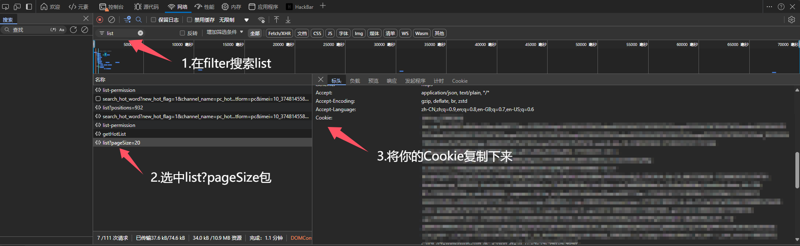

Csdn2Local:将csdn的博客保存到本地markdown格式
CSDN2Local
一个帮助你将你自己的CSDN博客保存到本地markdown格式的脚本。方便博客归档和迁移。
使用教程
1.登录CSND 打开创作中心->内容管理
2.打开F12开发工具，并刷新界面
3.复制你的cookie，并将其保存到config.yaml的cookie字段中。

4.运行main.py
注意事项
只支持保存自己的CSDN博客哦。
配置文件
1 | |
一个帮助你将你自己的CSDN博客保存到本地markdown格式的脚本。方便博客归档和迁移。
1.登录CSND 打开创作中心->内容管理
2.打开F12开发工具，并刷新界面
3.复制你的cookie，并将其保存到config.yaml的cookie字段中。

4.运行main.py
只支持保存自己的CSDN博客哦。
1 | |